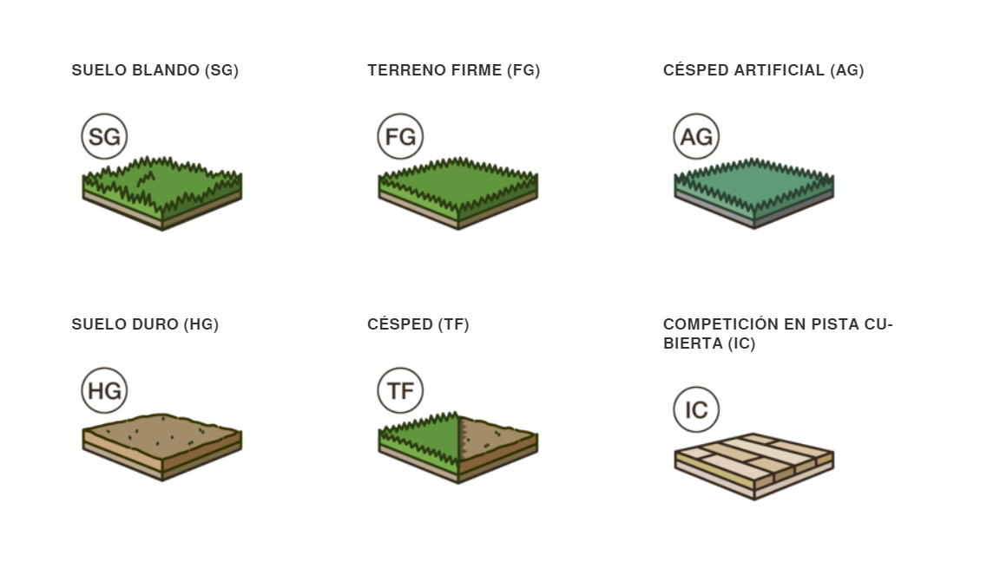

"El juego moderno es libre, en el que los atletas a menudo ocupan diferentes posiciones,
por lo que la
elección del calzado se basa más en el estilo de juego individual y las preferencias de los atletas que
en su posición. Los diferentes estilos de calzado se agrupan en tres familias principales, o silos."
NIVEL SUPERIOR
Cada modelo tiene niveles con diferentes características disponibles. Del más al menos costoso:
Elite
Pro
Academy
Club
Buscá el nivel en el nombre del producto para saber si el calzado está diseñado para jugadores de nivel
principiante o atletas más experimentados.
LA SUPERFICIE
Nike crea botines para varias superficies de juego para optimizar el agarre, el control y la velocidad.

MERCURIAL
El calzado Mercurial, confeccionado para la velocidad, lleva al juego a su esencia con materiales ligeros
minimalistas y un ajuste anatómico para mantener la rapidez y mantenerte cerca del suelo, tal y como un
auto de carreras de la Fórmula 1.
Nike Mercurial Vapor 13 Elite FGNike Phantom Venom Academy FG
TIEMPO
Nada se siente mejor que el cuero, y el calzado Tiempo utiliza este material legendario para brindar un
toque dominante que controla los juegos y un ajuste cómodo y personalizado que se moldea al pie.
Nike Tiempo Legend 8 Club FGNike Legend 8 Academy TF
PHANTOM
Los jugadores mercuriales atacan con velocidad. Los jugadores de Tiempo atacan con toque. Pero para el
jugador Phantom, todo se trata de habilidad.
![]()